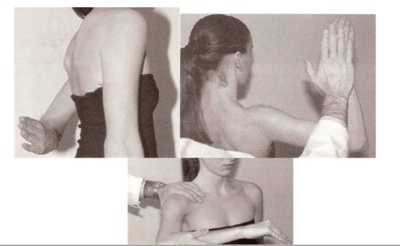

As estruturas anatômicas que entram em colisão em pacientes com a síndrome do impacto do ombro são
A tendinite dos rotadores é a principal causa de dor no ombro e caracteriza-se, ao exame físico, por:
Paciente masculino, 25 anos, atleta, jogador de tênis, refere dores em face medial do cotovelo há 48 horas, principalmente relacionada ao exercício. Sem febre ou outros comemorativos. Exame físico: sem alterações, exceto pela dor à palpação da região medial do cotovelo. Considerando o caso clínico, qual a principal hipótese diagnóstica em relação à dor do cotovelo?
Mulher, 32a, procura Unidade de Pronto Atendimento por dor em pontada, contínua e progressiva no quarto e quinto dedos da mão direita há 1 mês, com piora há 3 dias associada a palidez e parestesia ao estender roupas no varal, sem melhora com analgésicos. Exame físico: PA= 124x76 mmHg, FC= 87 bpm, FR= 17 irpm, Oximetria de pulso (ar ambiente)= 99%. PARA O DIAGNÓSTICO DEVE-SE REALIZAR A MANOBRA DE:
Os testes de Adson, Roos, Halsted e Wright são usados para o diagnóstico da síndrome:
Paciente masculino, 55 anos de idade, diabético, queixa-se de dor na região do ombro direito há 3 meses. Não consegue mais realizar atividades domésticas, como passar roupas ou trocar uma lâmpada no teto. A dor é contínua, inclusive durante a noite. O médico suspeita de capsulite adesiva do ombro. Quanto ao achado no exame físico mais característico nesta doença, assinale a alternativa correta.
Pintor de 42 anos queixa-se de dor em cotovelo esquerdo. Ao exame, apresenta exão e extensão preservadas, porém manifesta dor à palpação na face lateral do cotovelo, além de dor no local após manobra de extensão do punho contra resistência com cotovelo a 90°. Nesse caso, o diagnóstico é:
Paciente, 60 anos, é cozinheira e procura a unidade de saúde porque há 3 semanas vem apresentando forte dor em ombro direito, principalmente ao cozinhar, varrer a casa e estender roupa no varal. O que tirou a dor momentaneamente foi tomar um medicamento originalmente prescrito para seu marido após uma cirurgia do joelho. Observa que, talvez pelo uso desse fármaco, cou com o intestino "ressecado". Mesmo assim solicita receita porque gostou muito dos efeitos e a farmácia exigiu prescrição médica para lhe vender. Avalie as asserções a seguir: I) Provavelmente trata-se de constipação por uso de derivados de opioide II) Anamnese e exame físico não bastam para definir a abordagem terapêutica e o exame de escolha é o ultrassom, por ter baixo custo. III) Trata-se de uma dor de ritmo inflamatório e, portanto, AINE auxiliaria no processo cicatricial da lesão no ombro. IV) Paciente deve ser orientada a realizar repouso absoluto do ombro para que haja remissão completa da dor. Assinale a alternativa que indique a (s) assertiva (s) CORRETA (S):
No estudo do manguito rotador, frequentemente acometido por lesões que determinam dor no ombro, análises microangiográficas revelam uma área hipovascular (zona crítica de Codman) que se localiza
O quadro conhecido como "epicondilite lateral" é uma entesite (in amação tendínea no ponto de inserção óssea) que se caracteriza por:
Paciente com 45 anos apresenta dor na região do ombro esquerdo, progressiva nos últimos 6 meses. Está relacionada com certos movimentos do membro superior, principalmente à abdução acima da linha da escápula durante prática esportiva e na sua atividade laboral, a qual exerce com um pouco de di culdade por causa da dor. Nota também que às vezes, à noite, mesmo em repouso, tem episódios dolorosos que o incomodam durante o sono ao se deitar sobre o ombro. É praticante de basquetebol, desde a adolescência. Acerca da situação descrita pode se afirmar que:
O(s) músculos(s) responsável(eis) pelo movimento de retração da escápula (posição de "atenção") e sua(s) respectiva(s) inervação(ões) é(são):
Homem de 53 anos apresenta dor na região lateral do ombro esquerdo há 3 meses. Houve aumento progressivo da intensidade da dor que hoje o impede de trabalhar como pintor de parede. A dor é descrita como profunda, de moderada intensidade e que apresenta períodos de melhora durante o dia. A pior está relacionada com elevação do ombro. O que é correto afirmar?
Assinale a alternativa INCORRETA.
Jovem, 25 anos, atleta, jogadora de tênis, com dor em face lateral do cotovelo há 48h relacionada ao exercício. Exame físico: dor no cotovelo durante a extensão ativa do punho contra resistência. A principal hipótese diagnóstica é:
Paciente do sexo masculino praticante de tênis de quadra, apresenta dor no cotovelo, limitando sua função motora. O teste clínico realizado que indica a presença de epicondilite lateral do cotovelo, é:
Paciente com lesão de tendão do músculo bíceps braquial porção longa. O teste clínico que indica está lesão, é:
A Capsulite Adesiva (CA), também conhecida como “ombro congelado ” ou bursite obliterativa, caracteriza-se por dor e limitação importante dos movimentos ativos e passivos do ombro para todos os planos. Sendo características epidemiológicas dessa doença em relação à concomitância com a Hiperglicemia os seguintes aspectos, EXCETO:
R.D.S, de 32 anos de idade, operadora de caixa, previamente hígida, queixa-se de dor no ombro direito há cerca de 1 mês, relacionada com suas atividades trabalhistas. Ao exame físico, nota-se desconforto à palpação da topogra a de supra - espinhal, testes de Hawkins e Yokum positivos, assim como contração contra resistida dolorosa na abdução e na rotação externa. Os testes neurodinâmicos são negativos. Considerando a hipótese diagnóstica de síndrome do impacto do ombro associada à disfunção de manguito rotador, julgue o item a seguir. A principal base do tratamento consiste no exercício físico, especialmente com foco na fase excêntrica da contração muscular.
R.D.S, de 32 anos de idade, operadora de caixa, previamente hígida, queixa-se de dor no ombro direito há cerca de 1 mês, relacionada com suas atividades trabalhistas. Ao exame físico, nota-se desconforto à palpação da topogra a de supra - espinhal, testes de Hawkins e Yokum positivos, assim como contração contra resistida dolorosa na abdução e na rotação externa. Os testes neurodinâmicos são negativos. Considerando a hipótese diagnóstica de síndrome do impacto do ombro associada à disfunção de manguito rotador, julgue o item a seguir. O exame de imagem é necessário para orientação da terapêutica.
A presença de Capsulite Adesiva (CA) associa-se à idade e à duração da doença no Diabético, principalmente no DM1, o que explica a maioria das associações a outras complicações crônicas do diabetes. Não há, no entanto, clara relação com o grau de controle glicêmico. Das alternativas a seguir, é inadequada a seguinte associação:
Paciente de 58 anos, empregado em uma madeireira há 06 meses, procura Unidade de Saúde com queixa de dor ao mobilizar o braço direito. Refere importante limitação de suas atividades, com di culdade para elevar o braço, porém, sem perda de força do membro acometido. Ao exame físico, dor no teste de Apley e nas manobras de avaliação de síndrome do impacto (Neer e Hawkins), amplitude de movimentos preservada à mobilização passiva e força preservada no teste contra a resistência. Com os dados de história e exame físico, o médico suspeita tratar-se de um caso de:
O músculo do manguito rotador que realiza rotação interna do ombro é o:
Mulher de 34 anos, violinista da orquestra sinfônica, apresenta, há três meses, dor no membro superior esquerdo, localizada na face interna do braço e irradiada até a mão. Notou que, há três semanas, durante uma turnê de inverno, apresentou alterações na coloração nos dedos da mão esquerda, que tornaram-se pálidos, cianóticos e avermelhados. O diagnóstico mais compatível é:
O uso inadequado e contínuo de muletas pode lesar o nervo axilar, comprometendo inclusive a função motora dos membros superiores. Excluindo-se a lesão iatrogênica, que pode ocorrer em procedimentos ortopédicos no ombro, a lesão do nervo axilar não é comum nos esportes e existem duas principais causas em atletas: lesão por trauma direto e a síndrome do espaço quadrangular, por onde o nervo axilar atravessa. A estrutura citada que faz parte dos limites desse espaço é:
Mulher de 23 anos refere que há 4 meses notou o crescimento de um nódulo endurecido na fossa supraclavicular esquerda, doloroso à palpação e a movimentação do membro superior homolateral. Apresentava, também, certa restrição à mobilidade do mesmo. Ao exame, apresentava lesão nodular profunda na fossa supraclavicular esquerda de consistência endurecida, dolorosa à palpação e à elevação do membro superior, acompanhada de diminuição gradativa do pulso radial e parestesia quando fazia essa manobra. Sobre o quadro descrito, assinale a alternativa correta
Homem, 40 anos, apresenta dor no ombro e braço esquerdo associada à fraqueza e parestesia no membro superior homolateral que pioram com a manobra do escaleno. O diagnóstico mais provável é:
Doenças osteomusculares relacionadas ao trabalho DORT Lesão por esf orços repetitivos LER Paciente de 44 anos, masculino, trabalhador da construção civil, comparece em consulta na Unidade de Saúde com quadro de dor em ombro direito há mais de 01 ano com piora nos últimos meses associada à perda de força, após intensi cação de carga de trabalho. Nega trauma no local da dor. Ao exame físico, apresenta região subacromial dolorosa, dor no teste de Apley, amplitude preservada à mobilização passiva, notável redução de força e dor nas manobras de avaliação de síndrome do impacto (Neer e Hawkins). De acordo com a sintomatologia do paciente e o exame físico, o médico suspeita de:
Sobre a Síndrome do Desfiladeiro Torácico, assinale a afirmação incorreta:
A lesão do manguito rotador é causa frequente de dor em ombro e de consulta em ambulatório geral e ortopédico. Qual das afirmativas abaixo está correta quanto à evolução dessa lesão?
Trabalhadores de um frigorí co de bovinos, que utilizam força no manuseio de facões e mantêm os braços elevados acima do nível dos ombros, têm procurado o serviço médico por dores osteomusculares. O trabalho é executado em pé e a jornada diária atinge até 10 horas. Queixam-se comumente de dor intermitente na região dos ombros que piora com a elevação dos braços e di culdades na abdução, na rotação externa e na manutenção dos braços elevados. O diagnóstico do quadro musculotendíneo descrito é estabelecido preferencialmente por meio de achados:
Revisar: possível letra faltando em enunciado
Que estruturas tendinosas fazem parte do manguito rotador?
Sobre os testes para o Manguito Rotador, assinale a alternativa CORRETA. (VER IMAGEM)

Em relação à semiologia do membro superior, é VERDADEIRO:
Uma das causas de cervicobraquialgia é a síndrome do des ladeiro torácico, na qual ocorre compressão dos vasos subclávios e axilares e dos troncos do plexo braquial. Com relação a essa síndrome, considere as afirmativas a seguir. I. Na manobra de Adson, a ausência de pulso significa teste positivo. II. Tanto a elevação do braço quanto a “queda” dos ombros causam a compressão. III. A presença de costela cervical é fundamental para o diagnóstico. IV. Um dos pontos de compressão ocorre entre os músculos escalenos anterior e médio. Assinale a alternativa correta.
Dor no ombro é a terceira queixa musculoesquelética mais frequente de consulta médica. Com o avançar da idade, alterações degenerativas do manguito rotador podem levar a sua rotura. Em relação à síndrome do impacto, assinale a alternativa correta.
São considerados rotadores internos do ombro, exceto:
O professor de anatomia do primeiro semestre da Faculdade de Medicina da UFC pergunta para a turma de onde vem a inervação motora dos músculos do dorso. Qual, dentre as opções abaixo é a resposta correta para o questionamento?
A lesão do nervo torácico longo (nervo de Bell) pode causar a “escápula alada” devido à desnervação de qual músculo?
O músculo pequeno peitoral insere-se no:
Os recentes jogos pan-americanos trouxeram forte estímulo às práticas esportivas, fazendo a orar inúmeras vocações latentes. Contudo, ao lado dos seus inquestionáveis benefícios, os esportes podem ocasionar diversas lesões, dentre elas a epicondilite medial. Causa de dor incapacitante, acompanhada de sinais inflamatórios no cotovelo, em nível da inserção do tendão flexor radical do carpo, este problema osteoarticular tipicamente ocorre em jogadores de:
Trabalhadores de montadora de veículos procuram o Serviço Médico da Empresa com queixas de dores osteomusculares que atingem os membros superiores daqueles cuja atividade exige uso de força no manuseio repetido de peças pesadas e manutenção dos braços elevados acima do nível dos ombros. O trabalho é executado em pé todo o tempo e a jornada diária chega a 10 horas. Vários trabalhadores encontram-se afastados do trabalho com DORT. O quadro clínico mais comum é de dor intermitente na região do ombro, que piora com a elevação do braço, di culdades na abdução, rotação externa e na manutenção do braço elevado. Com base nas informações, o quadro clínico que está acometendo os trabalhadores, provavelmente, é de:
Na síndrome do desfiladeiro torácico, é correto afirmar que: Respostas: 1 12 23 34